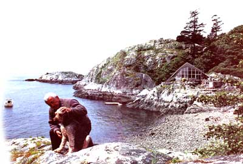

Building Canada's first shell structure on
a tiny island off Vancouver, BC.
IT WAS 1968 AND MY WORLD WAS falling apart. In the first three months, I buried my mother, my best friend and a shooting buddy. In June, I was divorced after 26 years of wedded "bliss." The Vancouver, British Columbia, metropolitan rat race was getting me down, and I wanted out. Then I found Passage Island. Passage Island-what a tonic. As virgin as when the world began. Unsullied by people, pesticides or pollution. The primitive openness and flexibility of life there was a welcome contrast to the urban, fixed-class society I was accustomed to.
Guarding the entrance to Howe Sound, Passage Island is insulated from downtown Vancouver's big city woes by eight miles of salt water. No utilities, no garbage trucks, no telephones, no fire stations, no policemen, no industry-just 32 acres of beautiful British Columbia. I escaped to that paradise for a few hours each week to move rocks, saw logs, watch the tide come in and go out-all in the name of therapeutic basket weaving. It was like having my own personal psychiatrist. I loved it. I loved it so much that I bought it.
I knew that, subdivided into one-third-acre waterfront lots, Passage Island was sure to attract a stream of spiritual refugees--refugees, like me, from the rat race. Back then, one of the waterfront lots would bring $6,200, which would help recoup my investment. In short order, the decision was made. In less than six months my life had turned around. I would build a house on Passage Island, move there and start anew. But not just an ordinary house. During 15 years in the construction business, I'd built quite a few of those. This had to be something different, something unique, something with a kind of permanence that had so far eluded my world. I'd long enjoyed working with stone, concrete and tile. And a fireproof house on an island with no fire department made good sense. So masonry was the building material of choice.
As for design, I considered and discarded many before remembering a structure I'd seen in Mexico, two years before. In a suburb of Guadalajara, I'd come upon this incredible building, still under construction. The formwork had just been removed from a spectacular, self-supporting, very thin concrete roof. It rose from four corner footings in graceful parabolic arches, forming four vaults that were groined together.
The Matthy's daily commute consists of "walking the
plank" and boarding a Donzi 28 for a 10-minute cruise.
I'd heard of shell structures-more properly called hyperbolic paraboloids--but I'd never seen one. The concrete was a mere 1'/z inches thick, with only tiny 1/4-inch rebar spaced four inches each way for reinforcement. Yet this fragile-looking roof provided a clear span of 90 feet. The structure gained its strength from its elegant shape-a paradoxical double curvature that can be described (and formed) entirely by straight lines. Concrete technology of this caliber was simply nonexistent in Canada.
By questioning the workers, I'd learned that Felix Candela was the building's architect, engineer and contractor. As I found out when I met him in his Mexico City office two years later, he had already created over 300 shell structures. Mr. Candela was most generous in supplying design basics for hyperbolic paraboloids, though he told me I'd never build one in Canada because their construction was too labor intensive. To prove his point, the architect showed me a photograph of a church under construction in Narvarte, D.F., near Mexico City. You could hardly see the roof for the army of workers busily placing concrete by hand. But by that point, the project was far too intriguing for me to be dissuaded. Building a concrete roof with both convex and concave curves using straight lumber for the formwork was something I just had to do.
After much thought and sketching, I chose the saddle, so named for its shape, from Candela's numerous shell designs. The floor plan would be a modest 1,000-square-foot bachelor pad, but with all the big city comforts. (Little did I know that I would be joined by a new wife, two new sons and two dogs over the next few years. Some bachelor pad.)
Passage Island, being devoid of utilities, made building seem at times like an exercise in reinventing the house. No sewers, so there would be a septic tank and dispersal field. No power lines, so a small generator was needed. No municipal water, so a controlled catchment system had to be devised. No gas mains, so propane would have to provide heat, cooking and refrigeration. On and on the list went.
Because propane would serve all the high-energy-use appliances, low-voltage direct current was a practical choice for lights and small appliances. Finding 12-volt equipment was no problem, since the advent of the recreation vehicle had created a whole new world of quality low-voltage TVs, hi-fis, radios, pumps and fluorescent light fixtures items well suited to the rigorous duty on Passage Island. DC energy also has the advantage of being storable in a battery bank, so the generator need not run constantly. The decision to use 12-volt power was easy, though I've gone through some refinements to reach the present system of a 210-amphour diesel starter battery and an AC/DC Honda generator.
Controlled catchment is a fancy way of saying that rainwater is collected from the roof, stored in a cistern and fed to the plumbing by an automatic pump. One inch of rain on one square foot of roof area delivers a little more than a half gallon of water to the cistern. With the addition of a little chlorine for sterilization, the trapped rainwater covers our basic domestic needs, though we prefer to bring over tasty West
Vancouver water in bottles for drinking.
Propane was, at first, hauled over by small boat in tanks weighing 175 pounds when full. In stormy weather, getting those bottles onto and off of a rocking boat was a real trial. Fortunately, there's now a propane barge that delivers gas to individual 500gallon tanks on the island.
As I worked out details, the interior slowly evolved into a one-bedroom, one-bathroom design. An L-shaped living-dining-kitchen area would be brightly lit by a 32-foot-wide spread of double-glazed windows soaring 16 feet high. Due to the self-supporting characteristics of the roof, a lintel (or header) over the 32-foot span would be unnecessary. The top of the window frame would simply be a 1 X 6 lying on its flat side, with a little concrete furring to accommodate the curved roof. In the middle of the living room would be a five-foot circular fireplace with a stone base under a chimney suspended from the roof. Outdoor living would be important in this environment, so I included 1,150 square feet of patio space in the planning.
With the design frozen, next came site preparation. Lot 56 on the southeast part of the island offered views of the North Shore Mountains, downtown Vancouver to the east and the American San Juan Islands to the south, but the site was mostly uneven bedrock, calling for extensive blasting to create a flat spot for the house. (Actually, most building sites here and even on the mainland of West Vancouver are on bedrock, making our local blaster one of the wealthiest individuals in the area.) To avoid the cost of transporting an air compressor, we used a Punjar gas-powered rock drill to place the explosives. The broken rock left after the blasting had to be moved aside but eventually would be used to give the house its fireproof exterior. (I ended up moving the rock by hand twice, because I decided to extend a patio where I'd initially piled the broken-up rock.)
Finally it was time to bring over building materials. The most practical approach was to charter a towboat and barge to haul everything over in one trip. The materials, a mobile crane and a secondhand quarter-yard cement mixer were all loaded at a barge ramp in False Creek. Unloading at Passage Island on September 1, 1968, was uneventful. The crane operator used a clamshell to of load the sand and gravel, and the rest was shifted by hook and slings.
Now I was ready to start. But start where? As a building contractor, I had built several hundred houses, but I hadn't had a hammer or saw in my hand since I was a boy, working for my older brother, Bob. Not only that, I'd never built a shell structure, nor for that matter had anyone else in Canada. Oh, yes, there was a hyperbolic paraboloid in Edmonton covering a swimming pool and another in Montreal at the 1967 World's Fair, but they weren't shells. These were four to six-inch-thick macho roofs, not to be compared to Candela's elegant shells.
It would have been foolish to hire a forming crew. They would have stood around half the time waiting for me to decide what to do next. So I hired Roy Borden, a young West Vancouverite, to give me a hand. He was of medium build, well muscled, and turned out to be a good worker who enjoyed the extemporary aspect of the novel job.
Unlike a conventional house, a shell structure is built from the roof down. Walls are added later to seal out the weather. I know it's hard to imagine, but all the supporting formwork for the doubly curved concrete roof was built with straight lumber. (Visitors are so baffled by this idea that I've built a hyperbolic paraboloid bird feeder on my patio so I can lay a straightedge on its roof to demonstrate.) The formwork looks like quite a maze prior to the concrete pour, but once the masonry has cured, all the wooden beams and joists are removed to reveal simple, clean lines. (In fact, I used the form lumber from my house to build two other houses, one of which was a shell structure.)
Because of the blasting, the base Roy and I worked from was rough-graded, broken rock. This meant that each post supporting the formwork had to be individually cut to length. We used falsework (supports that would later be removed) to hold the 4 X 4 beams on four-foot centers until we could secure them with posts and cross bracing. The falsework also acted as a template for locating the beams. In essence, we were already working down from the top.
When we nailed 2 X 4 joists over the beams on 12inch centers, suddenly the graceful curves of the roof could be clearly seen. What had previously been a geometric abstraction was revealed in wood. The frame was then sheathed with 3/8" X 4' X 8' plywood sheets, which had to be cut in half, lengthwise, and then trimmed slightly to conform to the roof. Roy had the job of carefully fitting two-inch extruded polystyrene foam insulation over the plywood. After the rebar was placed atop the foam, we would pour 11/2 inches of concrete, which would bond to the foam.
But there was a slight delay.
On a Thursday, at quitting time, all of the insulation was in place and held down by rocks. But an overnight gale-force southeaster made short work of Roy's attempt to secure the insulation. The next morning we found that half of it had blown off the roof into the forest behind. The sheets were crushed, broken and impaled on tree branches. Only half were salvageable by trimming ragged edges and refitting the pieces to the roof. That night every spare piece of lumber was used to hold the foam down for the weekend. It wasn't until we had the 1/4-inch rebar in place the following week that we stopped worrying about losing the insulation again.
After casting the chimneys for the fireplace and barbecue-which are made of reinforcing steel and troweled cement, using a process called ferrocement and placing the prefabricated furnace chimney and plumbing vent, it was time to pour the roof. Remembering Candela's admonishment about labor costs, I took advantage of the Christmas holiday to hire a covey of high school kids. It was a calm, clear, not too cold day when we left Fisherman's Cove with a boatload of students chattering like magpies in their excitement for this unusual day's work.
They had each been promised $5 per hour to mix 10 cubic yards of cement and carry it, in five-gallon buckets, to the roof-a la Mexico. Roy was in charge of the peons while I did the cement finishing. At the end of that 12-hour day, an exhausted bunch of boys received their $60 and sat, very still and very quiet, in the boat on the way home.
The next day the weather turned cold, and that night there was a snowstorm. The concrete was safe from freezing because we had used salt water in the mix, so I was able to forget work on the island for a short while and enjoy Christmas with my friend Julie.
After the snow melted, I was eager to get back. Roy was going to take a couple more weeks off, so I decided to strip the formwork alone. First, I removed every second post. Then, carefully, I pulled out more and more, until only one post remained in the center of the house. That 4 X 4 appeared to be the sole support for all the formwork; once removed, all the plywood, joists and beams would come crashing down. Not wanting all this to land on my head, I tied a rope to the bottom of the post, led the other end clear of the building and gave it a mighty yank. The post came flying out, but the formwork didn't budge an inch! It just stood there without any visible signs of support.
But of course! With the joists and beams maintaining the shape of double curvature, the formwork was being supported in exactly the same way as the roof itself: by the rock cliff at one corner and the reinforced concrete pedestal at the other. A dramatic demonstration of the hyperbolic paraboloid's inherent strength.
Working gingerly, I found that it was even possible to remove the beams one by one, so that only the joists and plywood held the shape. But, finally, it happened. I was removing joists, still mesmerized by the form's ability to defy gravity, when, suddenly, there was the sound of splintering wood. I was in the middle of the house at that moment and promptly established a new world record for the 10-yard dash as boards and plywood came crashing down behind me.
After the mess was cleaned up, Roy came back to help with the perimeter foundation and cistern. Again, it was an interesting departure from conventional construction to place a foundation after the roof was in place. In fact, our only real constraint for the floor's shape was that there be some way to close the gap between the foundation and roof with a nonstructural wall. I decided to hire professional cement workers to pour and finish the slab, while I would do the under-floor wiring, plumbing and gas fitting myself. So, Roy was soon out of a job once more.
During construction, I was living in Vancouver's West End with my friend Julie and had a 23-foot boat moored a short walk from our apartment. Twenty-five minutes after leaving Coal Harbor, I would be on Passage Island, refreshed by my "commute." One morning I came out under the Lion's Gate Bridge to be met by well-spaced eight-foot swells. They generated a most pleasant roller coaster ride to work. After a while, though, my pleasure was diminished by the thought that if I came over a crest to find a log in my path, there would be little I could do to avoid a collision. No sooner had I considered this possibility than I saw a killer whale heading straight for my bow. I braced for a crash, but the whale must have been as startled as I was. He sounded, allowing the boat to pass safely over him.
Working alone on the island was a great pleasure. I have always enjoyed my solitude, and life was enhanced by watching each day as the spring weather began dressing skeletons of deciduous trees in fresh, lush greens.
No two days were the same, either in the forest or at the edge of the sea. And there was also the tremendous satisfaction of working creatively with my hands. It had been a long time.
Those were the good days-largely carefree. Still, I was totally responsible for my safety on that deserted island. Whether working on scaffolding or surveying a cliff, I had always to be aware that a slip, resulting in a broken bone, could be very serious. Life on a tiny British Columbia island can be enchanting but unforgiving.
One morning, a man in his 40s arrived in a small boat. His face was familiar, but he had to introduce himself before I realized he was Roy's father. The family resemblance was what I had seen.
With a face clouded by worry, he told me that Roy had been missing for two days. We agreed that this was cause for concern. It wasn't like Roy to take of without letting his father know what he was up to. Roy had once said he might come over to the island in the spring to capture a young crow, in hopes of teaching it to talk. If he'd come over without my knowing and had had an accident, no one would have found him. My thoughts about my own safety working alone on the island came back to me.
We scoured the tiny island for three hours without finding a trace of Roy. A greatly disturbed father got back in his boat to continue the lonely search on other islands. Tragically, a couple of days later, Roy was found near Bowyer Island (about five nautical miles up Howe sound from Passage Island) floating face down. No one ever found out what caused his untimely death.
The weeks were rushing by and, without Roy's help, the work was progressing at too slow a pace. Though the slab was poured and finished, falsework had to be constructed for the stone masons to build against. The outside walls would consist of eight inches of stone and two inches of polystyrene foam. The insulation had to be mounted on the outside of the falsework, so the stone masons could use a wet mix at the back of their work to bond the insulation to the masonry. Windows and doors would also be mounted on the falsework and the rock laid up around them. Julie and I wanted to move in the first day of September, so it was time to hire more help.
Since I was quite accomplished by now at temporary wooden frames, the falsework went up quickly, and six husky Canadians of Italian descent came to build the stone walls. They were a delight to work with, and Frank, the boss, was a master craftsman. The schedule was beginning to look achievable.
Then, on the masons' third day, disaster struck!
The roof, despite its five-inch edge beams, was extremely flexible in its unsupported condition. I discovered much later that someone had decided to demonstrate this flexibility by jumping up and down on the edge of the roof, causing the green concrete to crack in two places. The most serious crack was at the supporting pedestal, which allowed the corner of the roof to part company from, and slide over the top of, the pedestal, twisting a bunch of newly exposed rebar from the edge beam.
For safety's sake, I shut the job down immediately and ferried the stone masons back to town. While there, I picked up some jacks to support the 17-ton roof from the inside while I figured a way to repair the damage.
Fortunately, the repair proved less difficult than I'd feared. I jacked the roof up to its original position and anchored steel rods to bedrock at the base of the pedestal. Then I cast a 12" X 12" concrete beam with eight 3/4-inch rebars on top of the pedestal and anchored it to the roof so that it would take the whole weight when the jacks were removed.
The roof once more securely overhead, the stone masons came back and finished their job. Falsework was hurriedly torn down, and Julie and I became the first immigrants to this new world on September 1, 1969.
Of course, because of the lost time, there were no kitchen cabinets, no finished flooring, no furnace and no walls or closets for the bedroom. The only finished room in the house was the bathroom-a concession to Julie. I had managed to get the curved ceiling and the inside walls plastered, but that was it. We lived out of cardboard boxes for three months while I finished the house. My days were filled with laying tile, suspending the fireplace, installing cabinets and adding the innumerable finishing touches that magically make a house into a home.
But, even after it was finished, the hyperbolic paraboloid had another lesson to teach us.
The next spring, on the first really warm day of the year, I was in town on business when I received a panic call from Julie by radio-telephone. "The fireplace chimney is breaking! It's making terrible sounds. I think it's going to fall down. What shall I do?"
"Get out of the house!" I shouted. "I'll be there as soon as possible." The vision of the 750-pound, bell-shaped chimney crashing to the floor caused me to finish my business in minutes, but by the time I arrived home the day had cooled down and so had Julie. There were no "terrible sounds" coming from the chimney, and a quick tour of inspection showed nothing amiss.
The next day dawned bright and clear. The morning sun soon had the house up to 80°F in a demonstration of solar heat. I was standing on top of the stepladder, checking the chimney where it was suspended from the roof, when suddenly there was a loud report, like a pistol shot. It startled me, and I almost fell off the ladder. The shot was followed by another, then another. Unable to locate the source of these noises, I timidly climbed down the ladder, not knowing whether to run, jump or hide. Julie was out on the patio, shouting at me through the screen door to get out of the house, which was starting to sound like a shooting gallery in a penny arcade. Little puffs of white powder drifted down from the ceiling-and that was the first clue.
I then checked the roof above the wall unit which stood pretty much in the center of the house. Sure enough, the heat of the day had caused the roof to expand, and it was now arched 1/2 inch higher than the cabinet.
Concrete and mild-steel rebar expand and contract at about the same rate-but not plaster. Plaster is like china, with no flexibility at all. It would simply snap, with a loud report, leaving a hairline crack from which a bit of fine powder would drift down to the floor. We had to put up with this problem every warm summer day until the once-solid sheet of plaster had been reduced to irregular segments, roughly 18 inches across. That fall, we redecorated with latex paint, which filled the thin cracks and provided the flexibility demanded by the roof.
Passage Island has been home for 19 years now. During that time our little development has enjoyed leisurely growth. There are now 13 houses, plus another three under construction. One-third acre lots are no longer available for $6,200. It comes as no surprise to us that island living has become quite popular with Vancouverites. Prices on Passage Island now start at $50,000.
Though life here hasn't turned out exactly as I pictured in early 1968, it's fabulous in ways I couldn't then foresee. Our two sons, Kim and Chad, joined us in 1971 and 1975, and it's hard to imagine a place where children have a better chance to grow up like Huck Finn. The boys have total command of the island. They've rigged the giant trees with swinging lines so they can move about at bird level. We swim before breakfast and catch fish from our front yard. Yet there are responsibilities, as well as play. Six cords of firewood have to be cut each year, much of it from driftwood on the beach, and both boys are competent, careful boatmen. They have gained a sureness and a self-confidence that come only from experience. In sum, our family enjoys the advantages of a remote lifestyle, yet we are only 45 minutes from a major city.
Of course, because of the 500-foot-deep channel between Passage Island and West Vancouver, tasks that are simple for people on the mainland take on new meaning for us. Kim and Chad go to school in West Vancouver, so by 7:00 every weekday morning, rain or shine, we've descended our counterbalanced gangplank (built to handle the 16-foot tides) and are motoring toward the marina. We don't just run down to the corner for an ice-cream cone. An attitude of resource conservation comes naturally when groceries are passed from rocking boat to dock, and trash must leave the same way. It's automatic to switch lights of when not needed; leaving one on might mean getting up in the middle of the night to start the generator.
Building Canada's first shell structure was not without its problems, but Julie and I wouldn't exchange the house or our lives on Passage Island for anything else we know. Here we are much more in touch with the things that we think matter: watching a family of eagles cavort on updrafts while we breakfast, observing the rise and fall of the barometer for a clue to tomorrow's weather, picking fresh wild blackberries on an afternoon stroll, letting the chameleon sea prove once again that it never exhausts its storehouse of color. Thanks largely to Passage Island, my wounds from 1968 have all healed, and even the scars are hard to find.
[Top][The shell structure's floor plan][Roof on the rocks]
|
Don Osby The Matthy's daily commute consists of ""walking the plank"" and boarding a Donzi 28 for a 10-minute cruise. |
 Though only 45 minutes from th ebig city, Passage Island offers a calm-placed lifestyle in constant touch with nature. |
The Mattys (L-R) Phil, Chad, Julie, Kim. |
|
|
|
|
|
|
|
|